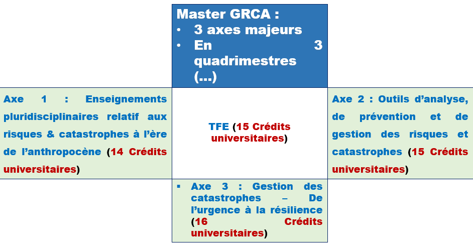

4 Programme et équipe enseignante 2025–2026
4.1 Informations générales
C’est un programme de formation universitaire diplômante de (60) soixante crédit (60 Cr). Il est Co-organisé par l’Université de Liège (ULiège) et l’Université de Namur (UNamur) – Financé par l’ARES-CCD.
L’objectif est de former des professionnels capables de porter les questions de gestion des risques et des catastrophes à tous les niveaux de décision, et de mieux les intégrer dans les politiques publiques, avec une vision systémique et prospective.
4.2 Structuration du Master & cours
4.2.1 Structuration du Master
4.3 Cours
4.3.1 Bloc 1 : Enseignement pluridisciplinaire relatif aux risques et catastrophes à l’ère de l’Anthropocène (14 crédits)
Introduction à l’Anthropocène, enseignant Pierre M. Stassart
Introduction aux risques et catastrophes :
Partim 1 : approche systémique (P. Ozer, Nicolas Dendoncker)
- Partim 2 : Introduction au notion de base (N..)
Risques et catastrophes naturels (Serge Brouyère, Benjamin Dewals, Hans-Balder Havenith, Aurelia Hubert, N..)
Risques et catastrophes techniques / technologiques (Jean-Francois Demonceau, Benjamin Dewals)
Risques et catastrophes sanitaires (Catherine Linard)
4.3.2 Bloc 2 : Outils d’analyse, de prévention et de gestion des risques et catastrophes (15 crédits)
Rôles des systèmes d’information géographique et des techniques géomatiques dans la gestion des risques et catastrophes
Partim 1 : Télédétection (Atoinne Denis)
Partim 2 : Systèmes d’information géographique (Atoinne Denis, Yvon Hountondji)
Traitement des données environnementales, Partim 2 : Initiation à R (Anne-Claude Romain)
Systèmes d’alerte précoce (Bakary Djaby, Bernard Tychon)
Aménagement du territoire et prévention des risques et catastrophes (Aurelia Hubert, Pierre Ozer, Marc Salmon)
4.3.3 Bloc 3 : Gestion des catastrophes : de l’urgence à la résilience (16 crédits)
- Séminaire interdisciplinaire (Équipe plurielle)
- Soft skills (F. De Longueville, C. Linard, etc.)
- Migrations environnementales (C. Zickgraf, etc.)
- Gouvernance et retours d’expérience (Intervenants externes)
4.3.4 Travail de fin d’études (15 crédits)
- Mémoire de recherche + expertise interdisciplinaire
Pour plus de détail, cliquez : Programme détaillé 2025–2026
4.4 Entrée universitaire 2025–2026 : rencontre académique
Le lundi 15 septembre 2025, dans le cadre de l’entrée académique 2025–2026, s’est tenue une rencontre d’échanges entre l’équipe de coordination du Master de spécialisation en Gestion des Risques et des Catastrophes à l’ère de l’Anthropocène (Ms GRCA) et les étudiants de la nouvelle promotion. Cette séance inaugurale a marqué le lancement officiel de l’année académique et permis de poser les fondements d’un cadre de travail collaboratif.
4.4.1 Objectifs de la rencontre
Cette première séance visait à :
- présenter la structure pédagogique du master et les axes qui l’organisent ;
- clarifier les modalités de fonctionnement et les attentes vis-à-vis des étudiants ;
- amorcer les premières réflexions autour du travail de fin d’études (TFE) ;
- instaurer un climat de confiance, de collégialité et de dialogue entre enseignants et apprenants.
4.4.2 Contenus abordés
Après une brève présentation des membres de l’équipe pédagogique, notamment les professeurs Pierre Ozer et Florence De Longueville, ainsi que M. Koufanou Hien. Ce dernier a exposé les éléments clés du programme :
- Les axes structurants de la formation :
- Axe 1 – Approche théorique : enjeux contemporains, concepts fondamentaux et cadres d’analyse ;
- Axe 2 – Approche méthodologique : outils d’analyse, systèmes d’information géographique (SIG), traitement de données environnementales, etc. ;
- Axe 3 – Approche opérationnelle : aménagement, gestion de crise, résilience, planification stratégique ;
- Approche de mise en pratique : travail de fin d’études avec séjour de terrain de deux mois dans un pays du Sud.
Le TFE, véritable cœur du parcours académique, devra articuler :
- un travail de recherche personnel ;
- un travail d’expertise interdisciplinaire à vocation professionnelle ;
- un séjour de terrain (les pays partenaires pour l’année sont : Bénin, Sénégal, Cameroun, Madagascar).
À la différence d’autres formations, l’ensemble des modules du master est obligatoire, avec des cours organisés sur les sites de l’Université de Namur (UNamur) et du Campus d’Arlon.
Un point important a été souligné : la confiance mutuelle entre les étudiants et les encadrants constitue une valeur fondatrice du programme. À ce titre, il a été rappelé que Mme De Longueville (il y a une vingtaine d’années) et M. Hien (il y a trois ans) sont eux-mêmes d’anciens diplômés du master.
4.4.3 ️ Conseils méthodologiques et pratiques
Pour tirer le meilleur parti de cette année intensive, plusieurs recommandations ont été partagées :
- Gérer son temps avec rigueur, en anticipant les grandes échéances : cours, lectures, évaluations, terrain, rédaction du TFE ;
- Définir rapidement une problématique claire et réaliste en lien avec les enjeux du programme ;
- Documenter systématiquement son apprentissage, à travers une prise de notes structurée, des résumés et une capitalisation régulière ;
- S’approprier les outils numériques proposés :
- CELCAT pour le calendrier des cours ;
- eCampus pour les supports et échanges pédagogiques ;
- outils personnels (Google Agenda, Trello, Notion, etc.) pour l’organisation ;
- Constituer les groupes rapidement : pour la soumission au Fonds Elisabeth et Aménie (FEA) les projets doivent être soumis avant le 10 octobre 2025. Ils devront s’inscrire dans la thématique des Objectifs de Développement Durable (ODD), avec un accent sur l’ODD 6 (eau et assainissement) pour être recevables.
Concernant les travaux écrits :
- Le TFE individuel ne devra pas excéder 40 pages, de la page de garde à la bibliographie, avec environ 10 pages d’annexes.
- Le rapport collectif (expertise interdisciplinaire) sera limité à 10 pages, de l’introduction à la conclusion.
4.4.4 Ouverture et ancrage
Cette rencontre a posé le ton du master : transversal, interdisciplinaire, tourné vers l’action. Le fil conducteur tient en une idée, garder ensemble les dynamiques locales, les politiques globales et les trajectoires de résilience, plutôt que de les traiter séparément.